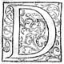
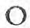
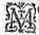
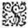
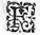
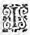

LE
PREMIER
LIVRE DE LA
TROISIESME
PARTIE DE L'ASTREE
de Messire Honoré d'Urfé.
Éd.
Éd. de 1619, 1 recto.

DEPUIS que la deliberation fut faite parmyparmi les bergeres de Lignon, d'aller dans trois joursη toutes ensemble visiter la desguisee Alexis, Amour "
qui se plaist à tourmenter avec de plus cuisantes "
peines, ceux qui le servent, et qui l'adorent "
avec plus de perfection, commença de faire ressentir à la Bergere Astree de certaines impatiences, qui se pouvoient dire aveugles, et desquelles
elle eut pu malaisément donner quelque bonne raison : car l'on en eust bien peut-estre trouvépu trouver quelqu'une au violant desir qu'elle avoit de voir Alexis, parce qu'on luy avoit rapportéraporté que son visage ressembloit à celuy de Celadon, sipourveu que la resolution de l'aymer n'eust point d'abord
preocupépreoccupé l'esprit de cette sage filleBergere , ou plustost sique cette resolution n'eust point esté devancee par une amour desja grande et impatiente : et sans doute l'on peut dire qu'elle estoit nee cette nouvelle Amour, puis que tous les effects qu'une naissante affection a accoustumé de produire, se trouvoient dés lors en l'ame de cette *nouvelle amantebelle fille ,
de sorte que les trois joursη
qui avoient esté pris pour faire ce tant aggreableagreable voyage, et qu'elle nommoit trois siecles *
de longues et fascheuses annees, luy sembloient si longs, qu'elle euteust bien voulu que sa vie euteust esté d'autant abregee, pourveu que le jour si desiré vintvinst
tant plustost luy donner le contentement qu'elle esperoit : Mais lors qu'Alexis sceut par son frere, que veritablement Astree devoit la visiter dans si peu de temps, quel sursaut fut celuy de cette déguisee Druyde ? Elle ressentit tout à coup deux bien differentes passions, encores qu'un mesme sujet les euteust produites dedans une mesme ame : sa joye ne fut pas petite de penser que dans si peu de jours elle joüyroit de l'agreable veuë de sa bergere, et pourroit l'entretenir, encore que sous ces habits empruntez : mais sa crainte n'estoit guereguiere moindre, quand elle pensoit que si elle estoit recognuë, sa maistresse auroit occasion de l'accuser
de desobeyssancedesobeïssance
et d'avoir contrevenu à ses commandemensη
, faute qu'elle n'eust voulu commettre pour la perte mesme de sa vie, et reproche qu'elle n'eust pu souffrir sans la mort : Car ayant conservé son affection jusques en ce temps-là, pure et exempte de toute sorte de blasme, elle eut beaucoup plustost choisi de n'estre plus, que de laη
noircir de la moindre tache d'infidelité, ou de peu de respect : Et toutesfois suivant la coustume de ceux qui ayment bien, elle retenoit plus souvent ses pensers sur les agreables images que son espoir luy representoit, que sur celles de la crainte, si bien qu'elle commença de trouver le terme de trois jours trop reculé, et accusoit en son impatience ceux qui l'avoient ainsi ordonné sans raison.
Que si Leonide qui sçavoit tous les secrets de son cœur, et qui sembloit estre destinee à n'avoir jamais ce qu'elle desiroit, mais à contribuer seulement toute sa peine, et toute son industrie au contentement d'autruy, n'eut par ses doux entretiens, et par ses complaisances ordinaires accourcy la longueur de sesces jours ennuyeux, elle eut passé sans doute une assez fascheuse vie : Mais combien cette attente eust-elle esté beaucoup plus difficile à toutes deux, si le berger eust sceu l'impatience d'Astree, et si Astree eust esté asseuree que ce n'estoit pas la ressemblance de son berger : mais son berger mesme qu'elle verroit où elle alloit chercher cette Druyde ? Et considerezη
combien Amour "
est mauvais maistre, et
combien il paye mal la "
peine de ceux qui le servent : il donne à ces "
Amants tout ce qu'ils sçauroient desirer, car il fait qu'ils meurent d'amour l'un pour l'autre, et il n'y a point de desir en leur ame plus ardent que celuy de cette reciproque volonté : mais comme s'il estoit jaloux que les humains jouyssent de ces contentemens, qui sont les plus grands que les Immortels puissent avoir, il veut qu'ils ignorent le bien qu'il leur faitfaict , et que dans cette ignorance ils n'en jouïssentjouyssent point. Car Celadon ayant esté si cruellement condamné à un eternel bannissement, que pouvoit-il accuser de cette injustice, que le changement de l'amitié de sa Bergere ? Et Astree l'ayant veuη
precipiter dans les eaux de Lignon ; et depuis ayant eu opinion que son esprit estoit revenu vers elle lors qu'elle dormoitη
, que pouvoit-elle penser, sinon que l'amour du Berger n'ayant pu souffrir la cruauté de son commandementη
, il avoit recouru à la mort pour fuir l'insupportable sentence de son courroux ? Et cette consideration la tourmentoit de si grands repentirs, qu'elle estoit fort peu souvent seule, qu'incontinent les souspirs ne tesmoignassent le regret de son ame : et les larmes, le cuisant desplaisir qu'elle en avoit.
Le jour en fin tant impatiemment desiré fut devancé et par cette nouvelle Druyde, et par la nouvelle Amour d'Astree, parce que toutes les deux ne pouvant attendre le lever du Soleil, sortirent du lict dés la premiere clarté de l'Aurore. Celadon qui fut le plus diligent, ne pouvant trouver repos dans les plumes du sienη
, et accusant le Soleil d'estre paresseux, appelloit et conjuroit
l'Aurore d'ouvrir promptement les portes du Ciel, afin de donner commencement à ce jour bien-heureux, et si longuement attendu : Et parce que sa lumiere ne paroissoit point encore, il chanta dans le lict mesme tels vers.

Moments paresseux trainez si lentement :O jours longs à venir, longs à clorre vos heures,
Qui vous tient endormis en vos tristes demeures ?
Vous souliez autresfois couler si vistement.
O Ciel qui traines tout avec ton roullement,
Et qui des autres Cieux les cadences mesures,
Dy moy qu'ay-je commis, et par quelles injures
T'ay-je faitfaict allantir ton leger mouvement ?
Moments vous estes jours, jours vous estes annees,
Qui de vos pas de plomb n'estes jamais bornees,
Que les siecles plus longs vous n'alliez égalant.
Penelope de nuict deffaisoit sa journee,
Je croy que le Soleil va ses pas rappellant
Pour prolonger le jour, et ma peine obstinee.
Cependant que le Berger se plaignoit de ceste sorte, le temps s'escouloit, et peu à peu faisoit approcher l'heure de la premiere clarté du jour, qui ne donna pas si tost par les vitres dans sa chambre, que le berger devenude Berger devenant Druyde, en prenant les habits d'Alexis, elle laissa le nom de Celadon pour celuy de la fille d'Adamas. Trop heureuse Druyde en ce changement si elle eut pu aussi se despoüiller de la passion qui la faisoit déguiser de cette sorte ! Mais le cœur de Celadon, qui sous ces habits empruntez, ne laissoit de luy demeurer dans l'estomachestomac, n'eut jamais consentyconsenti à ce changechangement , non pas mesme quand la mort l'eut voulu ravir du lieu où il estoit. Vestu donc des habits d'Alexis, aussi tost que la porte du logis fut ouvverte, il s'en alla tout seul dans un petit boccage qui regardoit sur la plaine, et d'où se pouvoit remarquer presque tout le cours de la delectable Riviere de Lignon : mais aussi-tost qu'il y eut jetté les yeux dessus, combien les arresta-t'il promptement sur l'endroit où demeuroit Astree, et se representant l'heureuse vie qu'il avoit passee en ce mesme lieu, lors qu'en ses propres habits, et non point sous un nom emprunté, il luy estoit permis d'estre auprés de sa bergere. Que de souspirs luy desroba cette pensee, et que d'agreables souvenirs luy remit-elle en la memoire ! Il s'alloit une à une redisant les favorables responces, qu'à diverses fois sa bergere luy avoit faites, lors que quelquefois pressé d'amour il la supplioit de luy donner quelque asseurance de sa bonne volonté, ou quand la crainte le geloit, de peur qu'en fin la hainehayne de
leurs parens ne prevalut par dessus ses services ; là ne furent oubliees les traverses
η
d'AlcipeAlcippe et d'Hippolyte, ny les contrarietezη
d'Alcé, ny le courroux de leurs parens, ny les longs voyagesη
qu'on luy avoit fait faire, ny les finessesη
que l'Amour luy avoit enseignees, ny la constance qu'Astree avoit tousjours fait paroistre en toutes les difficultez qui s'estoient presentees, ny bref une seule chose qui luy pust tesmoigner qu'elle l'avoit aymé. Et apres considerant ce quiqu'il
η
luy estoit avenu, lors qu'elle le bannit de sa presence, et cherchant des yeux le lieu malheureux où il receut cette rigoureuse ordonnance : - Le voilà bien, dit-il, le monstrant du doigt, l'endroit destiné à me ravir tous mes contentemens, et à donner naissance à tous mes ennuis : Mais, s'escrioit-il apres estre demeuré quelque temps les bras croisez et sans dire mot, Mais est-il possible que d'une si grande affection il soit procedé une si grande hayne, d'une si grande constance un si grand changement, et d'un si grand bon-heur un desastre si peu attendu ? Et lors se taisant comme s'il eust consideré avec admiration la difference qu'il y avoit de sa vie passee à celle qu'il alloit trainant ; Et bien, reprenoit-il un peu apres, et bien elle est veritablement tres-grande cette difference que tu admires, mais tu en dois estre moins estonné, que de voir que tu sois encore en vie, apres avoir perdu tout ce qui te pouvoit donner quelque volonté de vivre.
Astrée
cependant qui de toute la nuict n'avoit pu clorre l'œil, ne vit pas plustost paroistre la premiere blancheur de l'Aurore, que se jettant
à bas du lict, elle s'habilla en diligence, et s'en alla avec la mesme haste trouver ses compagnes, qui n'ayans pas tant de passion qu'elle, reposoient aussi avec moins d'inquietude : Et quoy qu'en y allant elle vidvit Silvandre au carrefour de Mercure, qui estoit couché dessus les marches du Terme ; si est-ce que pour ne perdre un momentmomant de temps, elle ne voulut parler à luy, à fin d'estre plustost vers ces deux cheres amiesBergeres , qu'elle croyoit bien encores treuver endormies, mais qu'elle esperoit de faire haster tant plustost qu'elle y seroit. Et d'effect les ayant treuvees bien avant encores dans leur sommeil (car expressément ce jour elles avoient couché ensemble) elle les éveille, les appelle paresseuses, et pour leur donner occasion de se lever plus promptement, leur jette en terre et couvertes et linceuls, les laissant beaucoup plus estonnees de voir faire une telle actionη à cette Bergere, que non pas de se trouver nuës dessus le lict : mais elle estoit excusable, puis qu'une plus forte passion que n'estoit pas son humeur l'y contraignoit. O Silvandre ! Que tuη eusses eu d'obligation à cette Bergere, si interrompant tes pensees elle t'eust emmené avec elle pour tesmoingtesmoin de cette action ? Juge quel effect cette veuë eust causé en toy, puisqu'Astree voyant ces beautez en demeura ravie ? Et dit en souspirant, - Ha ! Diane, si vous eussiez esté la troisiesmeη dans le Temple, pour certain Celadon vous eust donné la pomme, et ce jour-là n'eust pas esté le commencement de nostre malheureuse amitié. - Astree, luy respondit-elle,
vous estes à ce matin si peu sage, que je ne sçaurois croire vostre jugement estre bon : aussi est-ce le moindre de mes soucis, que celuy de la beauté, n'y ayant plus rien au monde qui me la puisse faire desirer.
- Si est-ce, respondit Astree, que venant icy, j'ay rencontré une personne, qui, je m'asseure, esliroit plustost la mort, que de souffrir la continuation de cette volonté en vous : Et si vous l'aviez veu comme moy, renversé dessus les marches du Terme de Mercure, les bras croisez, et les yeux tendusη
contre le Ciel, vous croiriez que je ne ments pas.
- Je sçay bien, dit-elle, que vous voulez parler de Silvandre : mais, ma sœur, ne sçavez-vous que c'est par gageureη
?
- Les feintes, repliqua Astree, ne "
donnent
jamais de si veritables passions, et tenez "
moy pour la plus ignorante
personne du monde en cestecette scienceη
si Silvandre ne vous aime passionnément, et si cette amitiéη
, quelque traictement que vous luy puissiez faire, ne l'accompagne dans le cercueil : Car ces personnes "
melancoliques, et qui sont lantes et tardives à "
aimer, quand une fois elles s'esprennent, jamais "
plus leur amour ne s'esteint.
- Je
vous avoüe, ma "
sœur, respondit Diane, que dés le commencement "
que cette gageureη
se fit, j'eus cette mesme apprehension ; et n'eust esté que je cogneus que vous le vouliez ainsi, jamais je n'y eusse consenty, sçachant assez combien ces feintesfaintes sont "
dangereuses,
et combien sont importuns la "
pluspart de ceux qui aimentayment , desquels
ordinairement "
l'opiniastreté procede de vouloir vaincre "
ce qu'ils jugent
de plus malaisé : mais puis "
que le mal de ce Berger est procedé de la permission que vous luy avez fait avoir de moy, je suis resoluë qu'aujourd'huy sera le dernier jour qu'il en aura le congé : car en la presence d'Alexis et de Leonide, je donneray le jugement de Philis et de luy : aussi bien les trois Lunes sont escouleesη , et le retardement que j'y ay mis n'a esté que pour le desir que j'avois que la Nimphe vistvid la fin de cette action, comme desja elle avoit assisté au commencement. Astree se teut pour ne luy desplaire : mais Philis prenant la parole : - Et quoy ma sœur, luy dit-elle, avez vous opinion que quand vostre jugement sera donné, s'il vous ayme, il cesse de vous aymer ? - J'ay opinion, respondit Diane, qu'il ne parlera pas à moy de la sorte qu'il a fait, et que s'il m'ayme, il en aura toute la peine. - O Diane, repliqua Phillis, que vous l'entendez mal : A cette heure vous pouvez feindre, que tout ce qu'il vous dit, c'est pour nostre gageureη , au lieu que quand cette excuse n'y sera plus, vous serez obligee de recevoir ses paroles à bon escient. - Je sçay bien, reprit Diane, que ce que vous dites est vray : mais s'il parle à moy autrement qu'il ne doit, je le traitteray en façon qu'il n'y retournera pas la seconde fois. Phillis alors se mettant à rire, - O ma compagne, luy dit-elle, nous en avons bien veu d'autres qui avoient faict ces mesmes resolutions, et qui en fin ont esté contraintes de les changer : car dites moy je vous supplie, s'il continuë à vous en parler apres la premiere defence que vous luy en ferez, que sera-ce pour cela ? le tuerez-vous s'il y contrevient ? - Je ne le tuëray
pas, respondit Diane, mais je parleray bien à luy, de sorte que s'il m'ayme il craindra de ne me plus importuner, et s'il ne m'ayme pas, il plaindra la peine de faindre plus avant.
- Au contraire, luy repliqua
Phillis, s'il ne vous ayme pas, il ne se souciera guere de vous déplaire, et s'il vous ayme, son affection l'empeschera de vous obeyr en ce qui contrevient à son amour : car,
ma sœur, soyez asseuree qu'une violente "
peut bien estre contrariee, mais non pas effacee "
entierement : vous verrez qu'il obeyra peut-estre "
quelque temps à vos rigoureuses deffences :η
mais peu apres il rompra toutes considerations, et comme un torrent qui rencontre en son cours quelques empeschemensempeschements , au commencement s'arreste, puis peu à peu se renforçant, non seulement il emporte cette deffence, mais surmontant ses propres bords, inonde, et assable tous les champs d'alentour ; De mesme dis-je, vous verrez qu'apres s'estre contraint quelques jours, son affection l'emportera par dessus toutes vos deffences, et Dieu
vueille que ce ne soit avec tant de violence que chacun ne le recognoisse. Et si cela avient, comme vous devez croire qu'il aviendra, qu'est-ce que vous luy ferez de plus, que de renouveller encores ces premieres deffences ? Je veux bien qu'elles soient plus rigoureuses, mais en fin ce ne seront que
des parolesη
, et croyez moy qu'elles ont "
fort peu de force sur ceux qui aiment, comme je "
croy que faitfaict
Silvandre.
- Ma sœur, adjousta froidement Diane, je n'ay encores jamais veu de ces opiniastres dont vous parlez, et quand j'en rencontreray,
je chercheray les moyens de m'en
" défaire, ne croyant pas que le Ciel nous ait faitfaict si
" miserables, que nous ayant desnié la force, il ne nous
" ait donné la prudence pour nous pouvoir
conserver.
Ainsi alloient discourant ces belles Bergeres, cependant qu'elles s'habilloient, et desjà estans prestes, apres avoir donné la chargeη
de leurs trouppeauxtroupeaux à quelques jeunes enfans qui demeuroient au logis, elles s'acheminerent au carrefour de Mercure, où chacun se devoit assembler, pour apresde là
s'en aller au Temple de la bonne Deesse, et de là vers Alexis. Silvandre avoit devancé tous les autres, comme celuy qui n'avoit contentement que quand il voyoit Diane, ou quand, sans estre interrompu, il pouvoit entretenir ses pensees. Lors qu'elles y arriverent ce Berger chantoit, et estoit tellement ravy en son imagination, qu'encores qu'elles fussent tout aupres de luy, si est-ce qu'il ne les apercevoit point. Les paroles qu'il disoit estoient telles :
MOn cœur qui t'eslevant d'un vol trop temeraire,
Ne vois de ton desir la fole trahison,
Et qui sans y penser avales le poison
Sous un sucre trompeur, que penses-tu de faire ?
Mon cœur ne vois-tu pas qu'il seroit necessaire
Pour trouver quelquefoisquelquesfois à ton mal guerison,
De nous hausser plus haut que ne veut la raison,
Ce garçon
η
imitant, qui ne creut à son pere.
Je voy bien que tu dis, qu'en un sujet si beau,
Il vaut mieux que la mer nous serve de tombeau, "
Et qu'Amour dans la perte a mis la recompense.
O mon cœur ! il est vray, je ne t'en dédis pas :
Mais pour n'estre deceus, n'ayons donc esperance
De nul autre bon-heur, que de ce beau trespas.
Diane le voyant en cest estat, cogneut bien qu'Astree et Philis luy avoient dit la verité, et qu'il se preparoit un grand combat pour elle, parce que depuis la mortη de Filandre, elle n'avoit jamais eu ressentiment de bonne volonté que pour ce Berger. Et toutesfoistoutefois ne pouvant souffrir que Silvandre la servistservit , pour estre une personne incognuë, elle se voyoit contrainte d'user d'extreme rigueur contre l'affection de ce Berger, et peut estre en quelque sorte contre la sienne propre. Durant ces pensees, Philis qui aimoit Silvandre, depuis qu'en partie il avoit esté causeη de faire cesser la jalousie de Lycidas, en eut pitié, et se tournant vers Diane, elle luy dictdit fort bas en l'oreille. - J'avouë, ma maistresse, que
ce berger vous aimeayme mieux que moy, et je crains fort que si vous estes juste juge, je ne perde ma cause. Et parce que Diane ne luy respondit rien, ayant l'esprit diverty ailleurs, lors qu'il eusteut finy ses vers, elleη
feignit, selon sa coustume, de le vouloir contrarier. - Et quoy, Berger, dictdit -elle en le surprenant, faites-vous si peu de contecompte
de la compagnie qui est icy, que vous ne daignez seulement la regarder ?
Silvandre s'estant esveillé à cetteceste voix, car il estoit dans ses pensees, comme dans un profond sommeil, se releva promptement, et apres avoir salüé ces Bergeres : - J'avouë, dit-il, à ce coup, que Philis m'a obligé, encores peut-estre que son intention ait esté au contraire. - Vostre ingratitude, respondit Philis, est si grande envers moy, que je ne conseilleray
jamais personne de vous obliger, puis que vous le recognoissez si mal. Et puis continuant, - Est-ce ainsi Berger, dit-elle, que vous me remerciez de la peine que j'ay prise de vous advertir de vostre bien
*
devoir, en vous faisant avoir la veuë de ce que vous dites que vous aymez ? Quand ce ne seroit que l'incivilité dont vous usiez, en ne rendant l'honneur à ces Bergeres que vous leur deviez, encores me seriez vous infiniment redevable, et devriez user d'autre recognoissance que vous ne faites. Silvandre respondit froidement à cetteceste Bergere, - Vous me faictesfaites souvenir, Philis, de ces chevres, qui apres avoir remply le vase de leur laict, donnent du pied contre, et le cassent : car m'ayant en quelque sorte obligé, vous rompez cetteceste
obligation par les reproches dont vous usez envers moy ; et d'autant qu'elles me sont
aussi difficiles à supporter, *qu'il m'est impossible decomme à
ne recognoistre une grace lors que je l'ay receuë, je suis contraint de leur respondre, apres avoir avoüé
encorencores une fois pour toute
*
ma
satisfaction
que je vous suis redevable, mais non pas tant que vos paroles nous veulent persuader : car qu'est-ce que je vous doisdoits , et qu'avez-vous fait pour moy ? cela mesme que feroit l'aboy de Driopé, si quelqu'un survenoit quand Diane est endormie. Je confesse toutesfoistoutefois que la peine que vous y avez prise merite d'estre recognuerecogneuë , mais quelle recognoissance vous doit-on ? celle-là mesme que Diane a accoustumé de faire à son cher Driopé, lors qu'il a faictfait quelque chose qui luy a esté agreable ? que si vous luy demandez quelle elle est, elle vous dira que pour toute recompence elle luy met la main sous le menton, l'approche de sa joüe, et luy donne deux ou trois petits coups sur la teste : Puis que vous n'avez rien fait davantaged'avantage pour moy, vous devez estre contente du mesme payement. Astree et Diane ne se peurent empescher de rire de cetteceste plaisante responceresponse , et Lycidas mesme qui y estoit survenu en mesme temps, lors que Diane ayant repris son haleine, dit à
Silvandre, - Encores oubliez vous, Berger, que quelquefois pour le caresser d'avantage, je luy crache au nez.
- S'il ne tient qu'à cela ma maistresse, dictdit
Silvandre, que je ne sorte de l'obligation que je luy ay ay
η
, j'y satisferay tout à
ceste
cette heure : Et à ce mot, il s'avança, faisant semblant de luy vouloir prendre le dessous du menton, mais elle se recula, et feignant un visage severe, dit au Berger, - Si
vous satisfaites à toutes vos debtes avec mesme monnoye, je suis d'avis que ceux à qui vous devez vous en quittent aussi bien que je fay, puis que le payement en est si mauvais : et toutesfois, ingrat, si ne pouvez vous nier que l'obligation que vous m'avez ne soit grande, quand ce ne seroit que pour avoir changé vos fascheuses pensees en la veüe de cetteceste belle Diane.
- Cette obligation, dit-il, est grande, si vostre intention est telle que vous la dites : mais parce que
" tout presentη
qui vient de l'ennemy peut estre soupconné
" de trahison, pourquoi ne diray-je qu'en ce bien que vous m'avez fait, vostre dessein a esté tout au contraire ?
- Et quel, repliqua Philis, pourroit-il avoir esté ?
- Vous avez peut-estre pensé, dit-il, que les rigueurs de ma Maistresse, me donneroient plus de peine que l'incertitude de mes pensees, ou bien, parce que vous sçavez que
" plus on voidvoit
η
la chose aymable, et plus l'amour
" s'en augmente : vous avez creu ne me pouvoir faire mourir plus promptement qu'en me faisant voir cetteceste Bergere, afin d'en faire de sorte augmenter ma flamme, qu'il n'y ait plus d'esperance de salut pour moy. Mais Philis, ne croyez pas que je refuse cette mort, puis que je sçay bien que je ne la puis eviter, et qu'il n'y a vie qui soit plus desirable.
CetteCeste dispute eust bien plus longuement duré entre ce Berger et cetteceste Bergere, n'eust esté qu'ils virent desja assez pres d'eux une grande trouppe, qui se venoit assembler au carrefour de Mercure, pour de là s'en aller tous ensemble voir Alexis. Et parce que pour se desennuyer ils
alloient chantant tour à tour, Silvandre se teust pour escouter un Berger, qui disoit tels vers, *
et lesquels il sembloit que Diane fust bien aise d'escouter, tant pour la douceur de la voix de celuy qui les chantoit, que pour mettre fin à leur discours avant que toute la trouppe fut arrivée.
Contre une Bergere inconstante.
I.

E
Sprit plus dangereux que la mer n'est à craindre,
Et de qui l'amitiéη m'apprend à desaimer :
N'esperez que vos feux puissent plus r'allumer
Ce qu'ils pûrent estaindre :
C'est un peu sage Nocher, "
Qui battu de mesme orage, "
Contre le mesme Rocher "
Se perd d'un second naufrage. "
Et de qui l'amitiéη m'apprend à desaimer :
N'esperez que vos feux puissent plus r'allumer
Ce qu'ils pûrent estaindre :
C'est un peu sage Nocher, "
Qui battu de mesme orage, "
Contre le mesme Rocher "
Se perd d'un second naufrage. "
II.
Vous estes plus glissant qu'un glaceη
precipice,
Plus on vous veut serrer, et moins on vous estraint :
Malheureux est celuy que le Ciel a contraint
A vous faire service :
Vous estes pour son tourment,
Luy Sisiphe, et vous la roche
Qui retomberetumbe incessamment,
Quand du sommet elle approche.
III.
Vostre ame qui sans chois brûle de toute flame,
Sous tant de divers feux estouffa mon ardeur
Par un contraire effect, produisant la froideurη
Dont se gele mon ame :
Par des contraires, en l'air
On oit gronder le tonnerre,
Qui devancé d'un esclair
FaitFaict trembler toute la terre.
IV.
Ce n'est donc sans raison, si dénouant mes chaines,
Je sors de la prison où j'ay languy pour vous :
Je vivray bien contant de faire voir à tous
Que vos armes sont vaines :
Et pour marque de vainqueur,
Je paindray pour mes trophees
Des flamesη
dessous un cœur :
Mais des flames estouffees.
Ce Berger qui chantoit, fut bien tost recogneu pour estre Corilas, qui se souvenant encores des tromperiesη de Stelle, ne pouvoit cacher la haine que veritablement il avoit conceuë contre elle. D'autre costé, la Bergere apres l'avoir recherché, et recogneu qu'elle y perdoit son temps, changea aussi son amitié en haine :
Ce qui estoit tellement recogneu de chacun, que l'on les nommoit ordinairement les amis ennemis : à ce coup la Bergere ne luy respondit point, parcepar ce qu'au mesme temps qu'elle voulut ouvrir la bouche, Hylas se mit à chanter tels vers, *
qui sembloient avoir esté faicts aussi bien pour sa deffence, que pour celle de l'humeur du Berger qui les chantoit.

SI l'Amour est un bien comme on nous faict entendre, "
Le bien communiqué, ce me semble, vaut mieux, "
Qui sera le Timon severe et sourcilleux
Qui reprendra le mien, plus je pourray l'estendre ?
Si c'est un mal aussi, qui me sçauroit deffendre
De finir promptement ce qu'on dit vicieux ?
Soit donc ou bien ou mal d'aymer en divers lieux,
Ou de cesser d'aymer, nul ne me peut reprendre.
Les Cieux s'aiment entr'eux, et d'un lien d'aimantη "
L'un avec l'autre Amour estraint chaque Element. "
Et n'aymeray-je pas, ne voyant rien qui n'ayme ?
La Nature en changeant se rend belle çà bas :
" Rien n'est en l'Univers, qui ne change de mesme :
" Et voyant tout changer, ne changeray-je pas ?
A ces dernieres paroles cette troupetrouppe se trouva si pres d'Astree et de ses compagnes, qu'elles se vindrent salüer et donner le bon-jour, et par ainsi l'on cessa de chanter pour se demander des nouvelles les unes aux autres, et sçavoir comme la nuict avoit esté passee parmy elles : un seul Hylas faisoit paroistre de ne se guere soucier de tout ce qu'elles faisoient, et s'adressant à Silvandre : - Eh mon amy, luy disoit-il, et n'y a-t-il personne icy qui sçache aymer que moy ? Que s'il y en a quelque autre, à quoy vous amusez vous tous de perdre ainsi le temps en ces petites niaiseries, au lieu de l'employer à s'en aller vitement vers la belle Alexis ? - Je m'asseure, respondit Philis, qui l'ouyt, que nous y serons assez tost pour avoir le loisir d'y employer toute ta constance :η - Vous vous trompez, mon ennemie, respondit Silvandre, il a raison de nous haster, autrement il est dangereux que la finη de son amour ne devance le commencement de nostre voyage. - Tu penses peut-estre, dict Hylas, me blasmer fort, en disant que je n'ayme pas long-temps ; et au contraire je tiens que c'est l'une des plus grandes loüanges que tu me puisses donner : car dy-moy Silvandre, celuy qui en un quart-d'heure fait plus de chemin qu'un autre en tout un jour, n'est-il pas estimable ? Et le Masson qui bastit une maison en un mois, qu'un
autre n'oseroit entreprendre en un an, n'est-il pas tenu pour meilleur maistre ?
- Si tu voulois rendre, respondit Silvandre, ton Amour un laquais, je pense que plus il pourroit aller viste, et plus il seroit estimable : mais pour le Masson duquel tu parles, tu te trompes
Hylas, à croire "
celuy qui se diligente le plus estre le meilleur artisan : "
car ce nom doit estre donné à celuy qui "
faictfait
le mieux ce qu'il entreprend, et non pas à "
qui s'en depesche plustost, parce que ceux cy "
gastent presque ordinairement l'ouvrage où ils "
mettent les mains. Hylas vouloit respondre lors "
que toute cette belle compagnie commença de s'acheminer vers le temple de la bonne Deesse, où
Chrisante les attendoit à disner, parce que cette venerable Druyde ayant sçeu leur deliberation, et voulant elle aussi rendre ce devoir à la belle Alexis, elle avoit prié ces belles et discrettes bergeres de passer à
Bon-lieu, affinafin de se mettre dans leur troupe. Les Bergeresbergers qui creurent cette compagnie leur estre fort honorable, ne luy voulurent refuser ceste requeste ; et par ainsi
Silvandre à ces dernieres paroles rompit compagnie à l'inconstant Hylas, pour prendre Diane sous les bras, et luy aider à marcher, plein de contentement de se voir aupres d'elle sans que Paris y fut : Que si alors la deguiseedesguisee
Alexis eut eu la veuë assez bonne, elle les eut bien pu voir partir du carrefour de Mercure, parce qu'estant en ce petit boccage relevé, elle n'avoit jamais pu oster les yeux de l'endroit où elle pensoit que fut alors la belle Astree, si ravie en ses pensees, qu'il sembloit que sa veuë fut attachee
où elle regardoit, sans faire autre action qui monstrast qu'elle fut en vie, sinon qu'elle respiroit, ou pour mieux dire souspiroit de tant en tant.
Cette pensee l'eust longuement entretenuë, si
Leonide
ne l'en eust divertie : Ceste Nymphe qui ne pouvoit assez bien amortir ces flames qui la souloient brusler pour
Celadon, se plaisoit de sorte en la compagnie d'Alexis, qu'elle ne l'abandonnoit que le moins qu'il luy estoit possible. Et parce que le sage Adamas
avoit bonne memoireη
de ce que
Silvie
luy en avoit dit, encores qu'il recogneust assez l'extréme affection que le berger portoit à la belle
Astree, si ne pouvoit-il s'empescher de vivre en une peine extréme, sçachant bien que sa niepce n'estoit pas si peu agreable, qu'elle ne peust pour quelque temps faire oublier à un jeune cœur tous les devoirs de la loyauté : Et ceste consideration eust bien eu tant de force sur luy, que jamais il n'eust permis que ce jeune berger fustfut entré en sa maison, sous le nom et les habits de sa fille
Alexis, si l'Oracleη
ne luy eust promis que quand
Celadon
auroit son contentement, sa vieillesse aussi seroit contente pour jamais : car y estant si fort interessé, il choisist plustost la peine de veiller de pres les actions de l'une et de l'autre, que de perdre le bien que le Ciel luy en promettoit. Et parce qu'il ne pouvoit tousjours estre aupres d'elle, d'autant que les affaires et domesticquesdomestiques et publicquespubliques l'appelloient bien souvent ailleurs, il avoit commandé à
Paris
de ne les abandonner *que le moins qu'il pourroitpoint ,
de peur qu'Alexis ne s'ennuyast si elle demeuroit seule.
Ce matin, aussi tost qu'il sceut qu'elles estoient hors du logis, et que
Paris trop long à s'habiller n'estoit avec elles, il sortit incontinent apres, et suyvant sa niepce, fut presque aussi tost qu'elle dans le boccage, où
Alexis avoit desja quelque temps entretenu ses pensees. Le bruit que la Nymphe fit en arrivant *fut cause que Celadon tourna le visage vers elle, et qu'il aperceutluy fit tourner le visage vers elle, et appercevoir
la venuë du Druyde, à qui elle portoit un si grand respect, qu'encores qu'elle eust mieux aimé demeurer seule pour avoir plus de commodité de penser en
Astree : si est-ce que feignant le contraire, elle l'alla treuver et luy donner le bon-jour, avec un visage plus joyeux que de coustume, dequoy
Adamas
s'estant pris garde, apres luy avoir rendu son salut, il luy dictdit ,
Que le bon visage qu'il luy voyoit à ce matin, luy estoit un presage que ceste journee luy seroit heureuse.
- Dieu
vueille, mon Pere, respondit Alexis, que vous en receviez du contentement : car quant à moy je n'en espere point que par ma mort :η
que si vous me voyez plus joyeuse que de coustume, c'est que tous les jours que je paracheve, il me semble avoir aproché d'autant la fin du supplice que la fortune m'a ordonné ; imitant en cela ceux qui sont contraints de faire un long et penible voyage, et qui tous les soirs quand ils sont arrivez à la fin d'une journée, content la quantité des lieuës qu'ils ont faictesfaite , leur semblant que c'est autant de diminué de la peine qu'ils doivent avoir. Le Druyde luy respondit
" froidement : - Mon enfant, ceux qui vivent
" sans esperanceη
d'allegement en leurs miseres,
" offensent non seulement la providence
" de Tautates, mais aussi la prudence de ceux qui
" ont pris le soing de leur conduite :conduitte Et en cela j'aurois occasion de me plaindre doublement de vous, d'un costé pour le tiltre de DruideDruyde que j'ay en ceste contrée, à cause de l'offense que vous faites à
Dieu, et de l'autre, comme Adamas, de celle que vous me faites, puis que l'Oracleη
vous a remis entre mes mains.
- Mon Pere, respondit Alexis, je serois tres-marry d'offenceroffenser nostre Tautates, ny vous aussi : et si mes paroles n'ont peupu me bien expliquer, je vous diray que mon intention n'a pas esté de douter de la providence de nostre grand
Dieu, ny de vostre prudence : mais ouy bien de croire que sa volonté n'est pas de me donner jamais contentement tant que je vivray, et que mon malheur est si grand qu'il surpasse toute la prudence des humains.
" - Il faut que vous sçachiez, reprit Adamas,
" que la mécognoissance d'un bien receu, faictfait
" bien souvent retirer la main du bien-faicteur,
" et la rend plus chiche qu'elle n'estoit auparavant : Prenez garde que vous ne soyez cause que le Ciel en fasse de mesme, car vous recognoissez si mal celuy qu'il commence de vous faire, qu'avec raison vous pouvez craindre qu'au lieu de continuer il ne vous charge de nouveaux supplices. Ne considerez vous point qu'ayant demeuré perdu si longuement dans un sauvage rocher, où il n'y avait que luy et vousη
, qui vous y sceussiez, il y a conduitη
par hazard
Silvandre pour vous donner quelque consolation ? Et pour la rendre encores plus grande, n'a-t'il pas fait qu'Astree mesme vous y soit allé treuverη
? que vous l'ayez veuëη
, voire que vous l'ayez presque oüye, et les plaintes qu'elle faisoit pour vous ? Quel commencement de bon-heur pouviez vous esperer plus grand que celuiceluy -là ? Je ne vous mets point icy en conte les visites de Leonide et de moy, car peut estre vous ont-elles esté importunes, mais si feray bien la pensee qu'il me donna de vous conduire chez moy, sous le nom et sous les habits de ma fille
Alexis, parce que c'est de luy, sans doute, qu'elle vint : d'autant que faisant dessein de vous remettre au comble de vos felicitezη
,
il a voulu que comme "
la fortune, sans que vous ayez fait faute, vous a "
ravy vostre bien : de mesme il vous soit rendu "
sans que vous y ayez en rien contribué. Et d'effect, "
quel commencement est celuy-cycestuy-cy ? Et croyez vous que sans son ayde particuliere, ces habits qui vous couvrent peussent
abuserabuzer les yeux de tant de personnes ? Qui est-ce de tout vostre hameau, mesmemesmes de vos amis plus familiers qui ne vous ait veu et mécogneu ? Il n'y a pas eu jusques à vostre frere qui n'y ait esté trompéη
: Et la ne s'arrestant les faveurs de
Tautates, n'a-t'il pas mis en la volonté d'Astree de vous venir visiter ? Et pouvez vous desirer un commencement plus favorable pour vostre restablissement ? Et toutesfoistoutefois plein de mécognoissance, vous vous plaignezpleignez , ou pour le moins ne recevez ces biens-faits de bon cœur : Prenez garde, mon enfant, vous dis-je encor un coup, que vous
ne le faciez courroucer, et que changeant les biens aux maux, il n'appesantisseapesantisse de sorte sa main sur vous, que vous ayez juste occasion de vous douloir.
- Mon Pere, respondit
Alexis, je recognois la bonté de Tautates, et le soingsoin
qu'il vous plaist avoir de moy, mieux que je ne le
sçaurois dire, mais cela n'empesche pas qu'il ne me reste encores assez de maux pour m'arracher de
" la bouche les plaintes que je fais : car je suis comme
" le pauvre malade, que mille sortesortes
" de douleurs affligent tout à coup, encores que l'on luy
" en oste quelques-unes, il luy en reste tant d'autres,
" que les plaintes justement luy peuvent bien estre permises.
Le DruideDruyde luy vouloit respondre lors qu'il vit venir Paris : car de peur qu'il n'entendist leur discours, et que par ce moyen il recognustrecogneut que ceste
Alexis
déguisee n'estoit pas sa sœur, il fut contraint de remettre à une autrefois ce qu'il luy vouloit dire : Et cependant la prenant par la main, et se mettant entre-elle et
Leonide, il commença de se promener parmy ce boccage, feignantfaignant de n'avoir point veu
Paris, qui arriva presque en mesme temps : mais si propre en ses habits de Berger, qu'il estoit aisé à cognoistre qu'Amour
avoit esté celuy qui ce matin l'avoit habillé : Il est vray que s'il y avoit esté soigneux
Leonide
qui en se flattant avoit opinion que sa beauté ne devoit guere ceder à celle d'Astree, n'y avoit pas espargné l'artifice ny tous les avantages qu'elle se pouvoit donner, affinafin qu'Alexis
la voyant ainsi paree, et faisant comparaison d'Astree
à elle, la simplicité de l'habit de la Bergere
ternist en quelque sorte sa beauté naturelle.
Alexis seule vestuë comme de coustume sembloit ne se gueres soucier de cetteceste visite, encoreencores que ce fut celle qui y avoit le plus d'interest : mais n'en voulant donner cognoissance à personne, elle ne voulut rien adjouster à son habit ordinaire ; outre qu'elle sçavoit assez que ce n'estoit plus la beauté qui luy devoit redonner le bon-heur qu'elle desiroit, mais la seule fortune : tout ainsi que seule et sans raison elle le luy avoit osté, et toutefois en cet habit simple et sans artifice elle paroissoit si belle, que Leonide n'en pouvoit oster les yeux.
Apres quelques propos communs,
Paris
qui estoit passionnément amoureux de
Diane, et qui pour luy estre plus agreable, avoit prisη
les habits de Berger, ne pouvant attendre sa venuë, dit au sage
Adamas, que s'il le luy permettoit, il iroit volontiers
treuver ces belles Bergeres qui devoient venir visiter sa sœur, pour les conduire par un chemin plus courtη
et plus beau, qu'il avoit appris depuis peu. Le DruideDruyde qui sçavoit bien l'affection qu'il portoit à Diane, et qui n'en estoit point marry, pour les raisons que nous dironsη
cy apres, loüa son dessein, luy
remonstrant que la courtoisie entre toutes les vertus, "
estoit celle qui attiroit plus le cœur des hommes, "
et qui estoit aussi plus propre et naturelle "
à une personne bien nee. Avec ce congé, Paris
prit incontinent le chemin de
Lignon, et descendantdébendant à grand pas la colline, quand il eusteut passé sur le pont de la
Boteresse, il suivit la riviere, prenant un petit *sentierchemin
à main
droitedroitte , qui
en fin le conduisit dans le bois où estoit le vain tombeau de Celadon ; et passant plus outre parvint au pré qui estoit devant le temple d'Astree : Mais à peine avoit-il mis le pied dedans, qu'il aperceutapperceut
à l'autre costé deux hommes à cheval, dont l'un estoit armé, et avoit en la main droitedroitte un gesse, en l'autre un escu, le heaume couvert par derriere d'un grand panache blanc et noir, qui alloit flottant jusques aupres de la crouppecroupe du cheval, le corselet et les tassettes escaillees, et les mougnons
enlevez en muffles de lyons, qui sembloient de vomir la cane du brassalBrasal la cotte de maille descendant jusques aupres de la genoüilliere, où les greves s'attachoient à boucles d'argent. Son espee mousse, et qui sembloit de se tourner presque en demy cercle, pendoit à son costé, attachee àet l'escharpe, qui luy servoit de baudrier, estoit de la mesme couleur que le panache, qui rompüeη
en divers lieux nede sembloit estre que le reste des bois, et d'un long voyage aussi bien que son panache *presque gasté des pluyes et des ronces.
Aussi-tost que
Paris
l'apperceut, se souvenant de ce qui estoit autrefois advenu à
Diane, lors que Filidas
et
Filandre
furent tuezη
,
il se rejetta dans le bois : et toutesfoistoutefois desireux de sçavoir ce qu'ils feroient, les alla accompagnant des yeux à travers les arbres. Il vidvit donc qu'aussi tost qu'ils furent entrez dans le pré, et qu'ils eurent apperceu l'agreable fontaine, qui estoit à l'entree du Temple, le Chevalier
voulant mettremit
pied à terre, l'autre, qu'il jugea estre son Escuyer, courant promptement, luy tint l'estrieu et print son
cheval, que débridant, sans respect du lieu, il laissa paistre l'herbe sacree : Cependant le Chevalier se coucha aupres de la fontaine, où s'appuyant d'un coude, et s'estant deffait de l'autre main son heaume, prit deux ou trois fois de l'eau dedans la bouche, et s'en refreschit et lava le visage. Paris le voyant desarmé, creut que son intention n'estoit pas de faire du mal à personne, et cetteceste opinion luy donna la hardiesse de s'en approcher d'avantage, se cachant toutefois le plus qu'il pouvoit dans l'espaisseur des arbres, entre lesquels il vint si pres d'eux, qu'il pouvoit voir et ouyr tout ce qu'ils faisoient et disoient. D'abord il remarqua que ce Chevalier estoit jeune et beau, quoy qu'il parut en son visage une extreme tristesse, et apres considerant ses armes, il jugea qu'il estoit Gaulois, n'estans gueres differentes de celles qu'il avoit accoustumé de voir, et de plus qu'il estoit amoureux : car il portoit, d'argent, à un Tygreη , qui se repaissoit d'un cœur humain, avec ce mot :
Tu me donnes la mort, et je soustiens ta vie.
Il eusteut peut-estre regardé toutes ces choses plus long-temps et plus particulierement, s'il n'en eust esté empesché par les souspirs de ce Chevalier, qui ayant tenu quelque temps les yeux immobiles sur la fontaine, revenant en fin en luy mesme, comme d'un profond sommeil, avec des sanglots qui luy sembloient de luy devoir arracher la vie : il vidvit que levant les yeux au Ciel, il dit assez haut à mots interrompus, telles paroles :

FAut-il encor se flatterflater d'esperance,
Faut-il encore escouter ses appas ?
Faut-il encor marcher dessus les pas
De cetteceste folle et trompeuse creance ?
N'avons nous point encor la cognoissance
Que nostre bien pend de nostre trespas :
Et que l'honneur desormais ne veut pas
Que nous ayons plus longue patience ?
Ces maux, ces morts, ces tourmenstourments infinis
Jamais de nous ne se verront bannis,
Et seulement nous vivrons à l'outrage.
Celuy qui peut tant d'offences souffrir,
Sans promptement se resoudre à mourir,
A bien un cœur, mais n'a point de courage.
Ces paroles furent suivies de plusieurs souspirs, qui en fin changez en sanglots, furent accompagnez d'un torrent de larmesη
, qui coulant le long de son visage, s'alloient mesler avec l'eau de la fontaine : Quelque temps apres s'estendant du tout en terre, et laissant aller négligemment les bras, il devint pâle, et le visage luy changea ; de sorte que son Escuyer qui avoit tousjours l'œil sur luy, le voyant en cet estat de peur qu'il n'évanoüyt, y accourut promptement, le mit en son giron, et luy jetta un peu d'eau au visage, si à temps que n'ayant du tout perdu la cognoissance et les forces, il revint plus aisément en luy-mesme : mais ouvrant les yeux, et les haussant lentement contre le Ciel : - O Dieux ! dit-il, combien vous plaist-il que je languisse encores ? Et puis relevant les bras, il joignit les mains sur son estomach, que ses yeux noyoient d'une si grande abondance de larmes, que son Escuyer ne se peut empescher de souspirer : De quoy s'appercevant : - Et quoy Halladin, luy dit-il, tu souspiressouspire ! ne sçais-tu pas qu'il n'y a personne au monde à qui il doive estre permis qu'à moy, si pour le moins cetteceste permission doit estre donnee au plus miserable qui vive ?
- Seigneur, respondit l'Escuyer, je souspire à la verité, mais plus pour voir un si grand changement en vous, que pour le desastre que vous plaignez : Car estre trompé d'une femme, estre trahy d'un rival, que la vertu s'acquiere des envieux, et que la fortune favorise quelquefois
leurs desseins, je ne trouvetreuve cela nullement "
estrange, puis que c'est presque l'ordinaire : mais je ne "
me puis assez estonner de voir ce courage de Damon, que jusques icy j'ay creu invincible, et duquel vous avez rendu tant de preuves, et pour lequel vous avez tant esté
estimé et redouté des amis et des ennemis, flechir à cette heure, et se laisser abbatreabatre sous un accident si commun, et auquel les moindres courages ont accoustumé de resister. Est-il possible, Seigneur, que quand ce ne seroit que pour ne point mourir sans vengeance, vous ne vueilliez vous conserver jusques à ce que vous ayez treuvé
Madonthe, pour en sa presence tirer raison de ceux qui sont cause de vostre desplaisir ? Considerez
" pour
Dieuη
qu'une calomnie qui n'est point averee
" tient lieu de verité, et que cela estant, Madonthe
" a eu raison de vous traitter comme elle a faitfaict . A ce nom de Madonthe, Paris
vidvit que le Chevalier reprenoit un peu de vigueur, et que tournant les yeux a costé, comme essayant de regarder celuy qui parloit à luy : Il luy respondit d'une voix assez lente, - Ah !
Halladin mon amy, si tu sçavois de quels supplices je suis tourmenté, tu dirois que c'est faute de courage, pouvant mourir, de les souffrir plus longuement : Dieuxη
qui voyez et oyez mes injustes douleurs, et mes justes plaintes, ou donnez-moy la mort, ou ostez-moy la memoire de tant
" de desplaisirs. - Les Dieuxη
, respondit l'Escuyer,
" se plaisent autant a favoriser de leurs graces
" ceux qui essayent avec
courage et prudence de
" s'ayderη
eux-mesmes en leurs infortunes, qu'à
" combler de disgrace ceux qui perdant et le cœur
" et le jugement, ne sçavent recourir qu'aux prieres
et aux vaines larmes. Pourquoy pensez vous "
qu'ils vous ayent donné une ame plus genereuse "
qu'à tant d'autres personnes ? Croyez-vous que ce soit pour en user, et vous en servir seulement aux prosperitez, ou aux
rencontres de la guerre ? C'est, Seigneur, pour en produire les effects en toutes les occasions qui se presentent, et principalement aux adversitez : afin que ceux qui verront ces vertus en vous, loüent les Dieuxη
d'avoir mis en un homme tant de perfections, et que les considerant en vous, ils ayent cognoissance de celleη
de l'ouvrier. Et voudriez-vous maintenant trahir leur intention, et les esperances que chacun a eu de vous ? Je me souviens, Seigneur, d'avoir ouy dire à ceux qui vous ont veu en vostre enfance, et en vostre plus tendre jeunesse, que dés le berceau vous donniez cognoissance d'un courage si relevé, et si genereux, que chacun jugeoit que vous seriez en vostre temps exemple à chacun d'une ameamitié invincible : Et voudriez-vous bien pour si peu démentir de si favorables jugemens ? Plusieurs femmes ont creu chose honteuse de flechir aux coups de la fortune : Et quoy qu'elles soient d'un naturel soubmis et flechissant, si est-ce que s'estans vertueusement opposees à ses desseins, elles l'ont bien souvent contrainte de les changerη
. Et vous qui estes nayné homme, dont le seul nom vous commande d'estre courageux, Vous qui estes Chevalier
nourry parmy les plus durs exercices de la guerre, Vous qui vous estes acquis tant de reputation dans les plus grands perils : Vous, dis-je, en fin, qui estes ce Damon,
qui n'a jamais rien treuvé de trop hazardeux, ny de trop difficile pour la grandeur de son courage, vous laisserez-vous tellement abatreabbattre par cet accident, et abatuabbattu perdrez vous de sorte le courage, que vous vueilliez mourir sans faire une seule action, je ne diray pas digne du nom que vous portez de Chevalier de Chevalier que vous portez , mais de celuy-la d'homme seulement. - Halladin, Halladin, respondit le Chevalier en souspirant, toutes ces considerations seroient bonnes en une autre saison, ou à un autre homme que je ne suis pas. Helas ! quelle action puis-je faire qui me contente, sinon de mourir, puis que toutes les autres desplaisentdéplaisent à celle pour qui seule je veux vivre ? Tu sçais bien que Madonthe est la seule chose que je desire : mais puis qu'elle est perduë pour moy, que veux-tu que je desire que la mort, si je n'ay plus d'esperance de treuver quelque relascherelâche à mes peines, qu'en elle seule ? - Mais comment sçavez vous, respondit l'Escuyer, que cetteceste Madonthe soit perduë pour vous ? - Mais toy-mesme, dictdit le Chevalier, comment sçais-tu qu'elle ne le soit pas ? - Permettez-moy, repliqua-t'il, de vous dire que je le puis mieux sçavoir que vous : Car, Seigneur, quand vous me commandâtes de luy porter vostre lettre, et la bague de Thersandre, et à laceste meschante Leriane le mouchoir plein de vostre sang, je les rencontrayη de fortune ensemble ; et quoy que la perfide et malheureuse qui est cause de vostre mal, demeurast immobile au message que je luy fis de vostre part, si est-ce que j'aperceu premierement paslir Madonthe, puis trembler, et en fin
voyant vostre sang, et oyant vostre mort, elle fust tombee de sa hauteur si on ne l'eust soustenuë, tant elle fut surprise de douleur : Et si je vous eusse creu en vie, il n'y a point de doute que je vous en eusse aportéapporté quelque bonne nouvelle,
- O Halladin mon amy, dictdit le Chevalier, que voila une foible conjecture ! si tu cognoissois le naturel des femmes, tu dirois avec moy que ces changemens procedent plustost de compassionη
, que de passion : car il est certain que naturellement "
toute femme est pitoyable, et que la "
compassion a une tres-grande force sur la foiblesse "
de leur ame, naturel que mal-aisément "
peuvent-elles
si bien changer, qu'il n'y en demeure "
tousjours quelque ressentiment. Et c'est "
de là d'où vient ce que tu as remarqué en
Madonthe : Mais, ô
Halladin ! ce n'est ny pitié ny compassion : mais amour et passion que je desire d'elle, et c'est ce que pour moy tu ne verras jamais en son ame. - O Dieuxη
! s'escria l'Escuyer, et à quoy estes vous reduitsreduit , puis que vous estes vous mesme le plus cruel ennemy que vous ayez ? Je n'eusse jamais pensé qu'un desplaisir eust peupu de cette sorte changer le jugement : Mais soit ainsi que Madonthe ne vous ayme point, si toutefois, vaincu d'amour vous en desirez les bonnes graces, quelle apparence y a-t'il que vous ne deviez aller où elle est, et non pas
fuirfuyr comme vous faites et les hommes et les lieux habitez ?
- Puis, dit-il, que la hainehayne s'augmente, plus on voidvoit
η
la chose haïe, ne fuy-je "
pas avec raison la veuë de Madonthe, en ayant "
recogneu la hainehayne ? Et si estant privé de ce qu'on desire, tout "
" ce que l'on voit est desagreable : Pourquoy treuves tu tant estrange que ne pouvant voir Madonthe, je ne vueille voir personne ? Ne sois point si cruel, Halladin, que de me ravir encores ce peu de soulagement qui me reste. - Mais qu'est-ce, Seigneur, repliqua l'Escuyer, que vous cerchezcherchez en ces lieux champestres et sauvages ? - La mort, dictdit le Chevalier : car c'est d'elle seule que j'espere quelque allegement. - Si cela est, adjousta l'Escuyer, encor vaudroit-il mieux aller mourir devant les yeux de Madonthe, pour luy faire voir que vous mourez pour elle, que non pas de languir comme vous faitesfaictes parmi les rochers et les bois solitaires, sans que personne le sçache. - Tu dis fort bien, Halladin, respondit le Chevalier en souspirant : mais ne sçais-tu pas qu'elle s'en est fuye avec son cher Thersandre, et se tient cachee de tous, pour jouïrjouyr de luy avec plus de commodité ? Penses-tu que dés l'heure que le fleuve où je me precipitay, ne voulut me donner la mort, je n'eusse recouru au fer et au feu, si je n'eusse eu le dessein que tu dis ? Mais helas ! il semble que toutes choses soient conjurees contre moy, puis que pour mon regard le fer ne tuë point, et l'eau ne peut noyer. A ce mot, les larmes luy empescherent la parole, et la pitié fit le mesme effect en l'Escuyer : de sorte qu'ils demeurerent quelque temps sans parler. Paris qui les escoutoit attentivement, oyant au commencement nommer Madonthe, ne pouvoit se figurer que ce fust celle qu'il avoit veuë déguisee en Bergere avec Astree et Diane : mais quand il ouyt le nom de Thersandre, il cogneut
bien que sans doute c'estoit d' elle, et cela le rendit plus attentif, lors que l'escuyer reprit ainsi la parole. - Quant à moy, si j'estois en vostre place, je ne voudrois pas mourir pour une personne qui m'auroit changé pour un autre : que si toutefois ce desplaisir me transportoit de sorte que je me resolusse à la mort, je voudrois que celuy qui seroit cause de ma perte me devançast
et mourust de ma main : car outre que je crois "
la vengeance en semblable chose estre un souverain "
bien, encores voudrois-je faire cognoistre à celle qui m'auroit changé, la mauvaise eslection qu'elle auroit faitefaicte ; et puis quelle apparence y a-t'il de laisser heritier de nostre bien celuy qui se resjoüitresjouyt de nostre mort ? Je vous conseillerois donc, Seigneur, si vous estes resolu à cette cruelle fin, qu'auparavant vous fissiez mourir, je ne dis pas Madonthe (car je m'asseure que vous ne hayrez jamais ce que vous avez tant aymé, encor que l'outrage que vous en avez receu y enη
pourroit bien convier d'autres) mais Thersandre ce ravisseur de vostre bien, et à qui desja vous n'avez laissé la vie que pour estre instrument de vostre mort.
- Or en cecy, respondit incontinantincontinent le Chevalier, j'advoüe que tu as raison, et qu'il faut qu'il meure, en quelque lieu que je le trouve, et fust-ce devant les yeux de cette ingrate : mais ne sçai-tu pas, Halladin, qu'il se tient caché ? Ah le malicieux qu'il est ! il a bien jugé que je prendrois cette resolution ; et pour y remedier, luy, Madonthe et sa nourissenourrice , se sont tellement perdus, que personne ne sçait où ils se sont retirez. O Dieuxη
! si
ma destinee est telle que je ne doive jamais avoir contentement de ce que j'aimeayme , permettez au moins que par la vengeance j'en reçoive de ce que je haïs.
Cependant qu'il parloit ainsi, et que Paris n'en perdoit une seule parole, le miserable Berger Adraste venoit chanter à haut de teste des vers mal arangez, et sans suitte : Ce malheureux Amant depuis le jugementη
que la NympheNimphe
Leonide donna contre luy, en faveur de Palemon, ressentit tellement la separation de Doris, que n'en ayant plus d'esperance l'esprit luy en troubla : il est vray qu'encores avoit-il quelquefois de bons intervalles, et lors il parloit assez à propos : mais incontinantincontinent il changeoit et disoit des choses tant hors de sujet, qu'il esmouvoit à pitié ceux qui le cognoissoient, et contraignoit de rire les autres. Et parce que son mal estoit venu d'amour, cetteceste impression aussi comme la plus vive et la derniere, luy estoit tellement demeuree en la memoire, que toutes sesles folies n'estoient que de ce sujectsujet , et lors que les bons intervalles luy permettoient de se recognoistre, il ne les employoit qu'à se plaindre de la rigueur de
Doris, de l'injustice de Leonide, de la fortune de Palemon, et de son propre malheur. Ces estrangers se teurent pour l'escouter, mais malaisément eussent-ils peu entendre ce qu'il disoit, puis qu'il n'y avoit pas une parole qui se suivist. Luy toutesfoistoutefois
ravy en sa pensee, sans les voir, s'en vint chantant jusques aupres d'eux, et n'eust esté le hannissement des chevaux, peut-estre eust-il passé sans les voir ; Le Chevalier qui
parmy ses paroles avoit souvent oüy repliquer le nom d'Amour, de beauté et de passion, cogneut bien de quel mal il estoit tourmenté, et desireux de sçavoir en quelle contree il estoit, s'estant relevé avec l'aydeaide de son Escuyer, il luy parla de ceste sorte. - Amy, ainsi les Dieuxη te soient favorables, dy nous en quelle contree nous sommes, et quel est le mal que tu vas plaignant ? Adraste qui comme je vous ay dictdit η n'avoit rien en sa pensee que son amour, regardant ferme le Chevalier, luy respondit, - Elle est si belle qu'il n'en y a point qui l'égale : mais Palemon me l'a ravie : Le Chevalier pensoit qu'il parlast de la contree, et Adraste entendoit de Doris : Surquoy il *le reprit tout estonné. - Et comment estoit-elle à toy ? - Elle l'estoit par raison, respondit-il, et aussi sera-t' elle bien tienne, si tu ne portesporte ce fer inutilement, et si tu as le courage de tuer ce ravisseur du bien d'autruy. - Et qui est ce Palemon, repliqua le Chevalier. - C'est Palemon ? respondit froidement le berger. - J'entens bien, adjousta l'estranger, qu'il se nomme Palemon, mais quel est-il, et quellequel est sa condition ? A ceste demande Adraste commença de se troubler un peu plus qu'il n'estoit, et regardant d'un œil hagard le Chevalier, il respondit : - Palemon, c'est celuy qu'Adraste n'ayme point. - Et Adraste, reprit le Chevalier, qui est-il ? Alors le berger entrant du tout en sa frenaisie, fit un grand esclatéclat de rire, et puis tout à coup se mettant à pleurer, il dit : - Si la menteuse Nymphe ne s'est pas souciee de son Amour, Doris qui au commencement toutesfois en pleuraη , s'en alla en
fin : Et quoy que je l'appellasse, elle ne tourna pas seulement la teste pour me regarder : Mais, dit-il tout en sursaut, traitte-t'on ailleurs de ceste sorte ? Le Chevalier au commencement estonné de ses paroles, cogneut en fin qu'il avoit l'esprit troublé, et parce qu'il jugea qu'Amour en estoit cause, il en eust plus de pitié, et se tournant vers son Escuyer ; - Voila, dit-il, si je ne meurs bien tost, la fortune que je cours, car sans doute ce berger est devenu fol d'Amourη
.
- L'Amour, reprit incontinantincontinent
Adraste, est plus aymable que Palemon, et s'il n'eust jamais esté, je croy que Doris seroit icy, ou moy là où elle est. Et suivant ce propos, le malheureux berger dit des choses si mal arrangees, que quelquesfoisquelquefois l'Escuyer estoit contraint d'en sousrire, dequoy s'appercevant le Chevalier, - Tu te ris, luy dit-il,
Halladin, de ce pauvre berger, et tu ne consideres pas que peut-estre bien tost tu auras le mesme sujet de te rire de moy.
- De moy, dit incontinantincontinent le berger, je suis
Adraste, et voudrois bien sçavoir si
Palemon
vivra long temps.
Et parce qu'il reprenoit tousjours de ceste sorte, la derniere parole qu'il oyoit, le Chevalier qui s'ennuyoit d'estre diverty de ses pensees, commanda à son Escuyer de brider leurs chevaux, et montantmontans dessus s'en alla à travers le bois par le mesme chemin que Paris
estoit venu, quiη
fut deux ou trois fois en volonté de se faire voir à luy, et luiluy offrir, comme à estranger toute sorte d'assistance, à quoy il luy sembloit estre obligé, fut pour les loix de l'hospitalité, fut pour le voir atteint du mesme mal qu'il souffroit :
mais il eust peur que s'il s'engageoit aupres de ce Chevalier, il ne perdit l'occasion de faire service à
Diane ; outre que cognoissant Thersandre et Madonthe, il avoit volonté
de les advertir de ce qu'il avoit appris : Ces considerations furent cause que reprenant le chemin qu'il avoit laissé il continua son premier dessein.
A peine estoit-il hors de ce bois, que jettant la veuë dans le grand pré qui le joignoit, il vidvit venir la belle trouppe qu'il alloitqui l'alloit
cherchant, et qui s'en venoit au petit pas, tantost chantant, et tantost discourant de diverses choses. Entre les autres, il
y avoit
Astree,
Diane,
Phillis,
Stelle, Doris,
Aminthe,
Celidée, FloriceElorice, Circene, Palinice, et
Laonice : Car encor que quelques-unes de celles-cy fussent estrangeres, si est-ce que le desir de voir la beauté d'Alexis, que chacun loüoit si fort, et les raretez qu'on disoit estre en la maison d'Adamas, les fit joindre à ceste compagnie ; Il y avoit aussi plusieurs bergers, entre lesquels estoit
Lycidas,
Sylvandre,
Hylas,
Tyrcis,
Thamire, Calidon,
Palemon,
et
Corilas, qui ne cessoient ou de chanter, ou de discourir, comme j'ay ditη
, pour tromper la longueur du chemin : Et de fortune quand Paris
les apperceut,
Hylas
chantoit tels vers.

JE le confesse bien, Philis est assez belle,
Pour brusler qui le veut :
Mais que pour tout cela je ne sois que pour elle,
Certes il ne se peut.
Lors qu'elle me surprit, mon humeur en fut cause
Et non pas sa beauté,
Ores qu'elle me perd, ce n'est pour autre chose
Que pour ma volonté.
J'honore sa vertu, j'estime son merite,
Et tout ce qu'elle faitfaict :
Mais veut-elle sçavoir d'où vient que je la quitte :
C'est parce qu'il me plait.
" Chacun doit preferer, au moins s'il est bien sage,
" Son propre bien à tous :
Je vous ayme, il est vrayPhillis, *je m'mais j' ayme d'avantage :
*Si faites-vous bien vousHylas que non pas vous .
Bergers si dans vos cœurs ne regnoit la faintise,
Vous en diriez autant,
Mais j'ayme beaucoup mieux conserverconservant ma franchise,
*Et me direEstre dit inconstant.
Qu'elle n'accuse donc sa beauté d'impuissance,
Ny moy d'estre leger,
" Je change, il est certain : mais c'est grande prudence
" De sçavoir bien changer.
Pour estre sage aussi qu'elle en fasse de mesme,
EsgaleEsgalle en soit la loy,
Que s'il faut par destin que la pauvrette m'aimeayme ,
Qu'elle m'ayme donc sans moy.
A ces dernieres paroles Paris se trouva si pres, que SilvandreSylvandre le recogneut : et parce qu'il tenoit Diane sous leles bras, il jugea bien qu'il déplairoit à sa Maistresse, s'il ne quittoit à Paris la place par honneur, qu'il n'eust jamais quittee à personne par Amour : Afin donc de l'obliger en cetteceste action, il luy dictdit assez bas, - Commandez-moy, ma Maistresse, de vous laisser, afinà fin que ce que je ne puis faire de ma bonne volonté, je le fasse par vostre commandement. - Berger, dit-elle en sousriant, puis que vous jugez qu'en cetteceste faveur que vous me faites, ce commandement vous puisse servir, je le vous commande. - O Dieux ! dit le Berger, qui se pourroit empescher d'estre entierement à vous, puis que vous obligez mesmes en desobligeant ? Il n'osa luy dire d'avantage, de peur que Paris ne l'oüitouyt , car il estoit si pres, que Diane s'avança pour le salüer, et le reste de la trouppe aussi. Et SilvandreSylvandre n'eust plustost quitté la place, que son rival la prit avec autant de contentement, qu'il l'avoit laissee avec regret. Apres quelques discours ordinaires, et que Paris s'apperceut que Madonthe ny Thersandre n'estoient point en cetteceste compagnie, il en demanda des nouvelles à Diane : à quoy Laonice respondit, que ce matin elle s'estoit trouveetreuvee mal, et que Thersandre luy avoit tenu
compagnie. - J'eusse bien voulu, adjousta Paris, l'avoir rencontree icy pour l'advertir que quelques-uns de ses ennemis sont arrivez en cetteceste contree, afinà fin qu'elle et Thersandre s'en donnent garde. Silvandre qui avoit tousjours l'œil sur Diane, ouït ce que Paris disoit ; et parce qu'il estimoit fort la vertu de Madonthe, il se chargea de l'en advertir à son retour. Laonice qui ne cerchoitcherchoit occasionη que de se vengervanger de ce berger, remarqua la promptitude dont il s'estoit offert à faire cet office, afinà fin de s'en servir en temps et lieu. Diane mesme qui commençoit d'avoir quelque bonne volonté pour ce Berger, y prit garde, comme nous dironsη cy apres : dequoyLaonice s'aperceut bien : mais cependant pour ne faire trop attendre la venerable Chrisante, toute la trouppe se mit en chemin ; Et parce que Diane avoit priéη Philis, de ne laisser Paris pres d'elle, sans qu'elle y fut, de peur qu'estant seul il ne luy parlast de son affection, elle se mit de l'autre costé de la bergere, et la prit sous le bras. Calidon conduisoit Astree, et Tyrcis et SilvandreSylvandre s'estoient mis ensemble ; quant à Hylas sans prendre party, il estoit tantost le premier, et tantost le dernier de la trouppe, sans s'arrester particulierement aupres de pas une de ces Bergeres, et sur tout ne faisoit non plus de semblant de Philis, que s'il ne l'eust jamais veue : dequoy Tyrcis entroit en admiration, et apres l'avoir quelque temps consideré, il ne peustpût s'empescher de luy dire fort haut : - Est-il possible Hylas, que vous soyez aupres de Phillis, sans la regarder ? Hylas feignant de ne l'avoir point encores
veuë, tourna la teste d'un costé et d'autre comme s'il l'eusteut voulu chercher, et en fin arrestant la veuë sur elle : - Je vous asseure, luy dit-il, ma feu maistresse, que j'ay tellement le cœur ailleurs, que mes yeux ne m'avoient point encoreencores averty que vous fussiez icy : mais à ce que je voy, vous y estes aussi bien que moy, je ne sçay si c'est le mesme sujectsujet qui vous y ameine.
- Il pourrait bien estre semblable, respondit
Philis, mais nous y sommes avec differente compagnie : car vous y estes avec le desir de voir la belle Alexis, et moy avec le regret de vous avoir perdu, et mesme au jeu de la plus belle, comme vous dites.
- Il ne falloit point, respondit Hylas, adjouster ceste condition d'avoir perdu au jeu de la plus belle, pour augmenter le desplaisirdéplaisir que vous en devez avoir : car si vous considerez bien la perte que vous avez faite, vous jugerez qu'elle ne pouvoit estre plus grande, ny que vous ne pouviez rien perdre que vous deussiez avoir plus cher.
- Et à quoy, respondit Philis, puis-je recognoistre ce que vous dites ?
- A ce qui vous en est avenu, adjousta Hylas : car me perdant si "
promptement,
ne scavez-vous que la premiere "
chose que le Ciel nous oste,
c'est ce qui vaut le "
mieux ?
- Et quoy, interrompit Tyrcis, est-il possible, "
Hylas, que vous pensiez le Ciel estre cause de vostre humeur inconstante ?
- Tout ainsi, respondit Hylas, qu'il l'est des vaines larmes que vous respandez sur les froides cendres de Cleon.
- Les choses qui ne dépendent pas de nous, adjousta "
Tyrcis, et dont les causes nous sont incogneuës, "
le respect que nous portons aux Dieux, "
" nous les faictfait ordinairement r'apporter à leur
" puissance et volonté : mais de celles dont nous
" cognoissons les causes, et qui sont en nous, ou
" que nous produisons, jamais nous n'en disons
" les Dieux auteursautheurs , et mesmesmesme quand elles sont
" mauvaises, comme l'inconstance : car ce seroit
un blaspheme.
- Que l'inconstance, respondit
Hylas, soit bonne ou mauvaise, c'est une question qui ne sera pas vuidee aisément, mais que la cause n'en soit incogneuëincognuë , ou si nous la cognoissons qu'elle ne vienne des Dieux ; Ah Tyrcis ! il faut que vous le confessiez, ou que chacun recognoisse qu'en vos larmes vous avez pleuréη
vostre cerveau, car la beauté n'est-ce pas un œuvre
de nostre grand Tautates ? Et qu'est-ce qui me fait changer que ceste beauté ? Si Alexis n'eust pas esté plus belle que Philis, je n'eusse jamais changé celle-cy pour elle : que si vous niez que la beauté en soit la cause, il faut bien qu'elleη
soit incognüeincogneuë à toute autre, puis que je ne la cognoy pas moy-mesme, et estant telle, pourquoy ne la rapporterons-nous à Dieu, sans blasphemeblasme ? puis mesme que nous voyons par l'effect que ce changement est bon et raisonnable,
" estant selon les loix de la nature, qui oblige
" chaque chose à chercher son mieux.
- Que la beauté, respondit froidement Tyrcis, soit un œuvre de Tautates, je l'avouë, et de plus, que c'est la plus grande de toutes celles qui tombent sous nos sens : mais de dire qu'elle soit cause de l'inconstance, c'est une erreur, tout ainsi que si on accusoit le jour de la faute de ceux qui se fourvoyent, parce qu'il leur faitfait voir divers chemins ;
et moins encores s'ensuit-il que si la cause vous en est incognüeincogneuë , elle le doive estre à tout autre :
car plus grand est le mal, moins est-il "
recogneu du malade, et pour cela faut-il conclurre, "
que le sçavant Myre ne le puisse non plus "
recognoistre. Et quant à ce que vous dites que cette "
inconstance est selon les loix de la nature, qui ordonne à chacun de chercher son mieux, prenez garde Hylas, que ce ne soit d'une nature dépravee, et toute contraire à l'ordonnance que vous dites : car quelle cognoissance avez vous eue
eu jusques icy que ç'ait esté vostre mieux ? quant à moy, je n'y remarque pour vostre plus grand avantageadvantage que la perte du temps que vous y employez, que la peine inutile que vous y prenez, et que le mépris que chacun fait de vostre amitié : Si vous estimez que ces choses vous soient avantageuses, j'avouë que vous avez raison : mais si vous vous en raportezrapportez aux jugemens qui ne sont point attaints de vostre maladie, vous cognoistrez bien tost que c'est le plus grand mal qu'en l'aageâge où vous estes vous puissiez avoir.
Diane
qui prit garde que
Tyrcis parloit à bon escient, et que peut-estre
Hylas
s'en fascheroitfâcheroit ,
voulut les interrompre, et empescher que ce discours ne passast plus outre, dequoy faisant signe à
Philis, elle la pria de prendre la parole, ce qu'elle fit incontinent de ceste sorte : - Mon feu serviteur, luy dictdit -elle, autrefois vous vous plaigniez qu'en toute cette trouppe vous n'aviez ennemy que Silvandre, il me semble qu'à cette heure
Tyrcis a pris sa place.
- Ma feu maistresse,
" respondit Hylas, ne vous en estonnez, c'est l'ordinaire
" que les mauvaises opinions prennent
" pied aisément parmy les personnes ignorantes. Tyrcis vouloit respondre lors qu'il en fut empesché par le pauvre
Adraste, parce qu'estant arrivé dans les bois de
Bon-lieu, ils le virent parlant aux arbres, et aux fleurs, comme si c'eussentsçeussent esté des personnes de sa cognoissance, quelquefois il se figuroit de voir
Doris, et lors mettant un genoüil en terre il l'adoroit, et comme s'il luy eust voulu baiser la robbe, ou la main, il luy faisoit de longues harangues, où l'on n'eust sçeu remarquer deux paroles bien arrangées : d'autrefois il luy sembloit de voir Leonide, et lors il usoit de reprochesreproche , en luy souhaitant toutes sortes de mauvaises fortunes : mais quand il se representoit Palemon, ses jalousies estoient bien plaisantes, et les discours aussi du bon-heur qu'il s'imaginoit : car encores qu'ils fussent fort confus, il ne laissoit de rendre tesmoignage de la grandeur de son affection. Ceste trouppe passa fort pres de luy, et quoy que sa veüe seulement fit pitié à chacun, si est-ce que quand il apperceut
Doris, il les toucha tous encores plus vivement, parce qu'il demeura immobile comme un terme
η
,
et les yeux tendusη
sur elle, et les bras croisez sur l'estomachestomac, sans dire mot sembloit estre ravy : Et en fin la monstrant de la main, lors qu'elle passa devant luy, il dit avec un grand souspir, - La voila ; et puis l'accompagnant des yeux, il ne les destournoit point de dessus elle, tant qu'il pouvoit la voir, mais quand il la perdoit de veuë, il se mettoit à courre, et la
devançoit, et sans tourner les yeux sur nul autre de la trouppe, il s'arrestoit devant elle, et la laissoit passer sans luy dire autre chose, et l'alla accompagnant ainsi jusques au sortir du bois : car (comme s'il y eust eu quelque barriere pour l'en empescher) il n'osaoza
outrepasser le lieuη
où la premiere fois
Diane le vidvit aupres de Doris, mais de là la suivant des yeux, quand il la perdit de veuë, il se mit à crier, - Or Adieu Palemon, et garde la moy bien, et à ce mot se r'enfonca dans le bois, où presque il demeuroit ordinairement, parce que ç'avoit esté le lieuη
où
Leonide avoit donné son jugement contre luy. Chacun en eut pitié, horsmis
Hylas, qui apres l'avoir quelque temps consideré s'en prit à rire : Et se tournant vers SilvandreSylvandre, - Voila berger, luy dit-il, l'effect de la constance que vous loüez si fort. Qui de nous deux, à vostre avis, court plus de danger de luy ressembler ?
- Les complexions plus parfaites, "
respondit Silvandre, sont plus aisément alterees : "
Et quant à moy, adjousta-il en sousriant, j'aymerois "
mieux estre comme Adraste, que comme Hylas.
- Le choix de l'un, dictdit
Hylas, est bien en vostre pouvoir, mais non pas de l'autre :
- Comment l'entendez vous, reprit SilvandreSylvandre ?
- L'intelligence, continua Hylas, n'en est pas difficile : Je veux dire que si vous voulez, vous pouvez bien devenir fol comme Adraste, vostre humeur y estant desja assez disposee, mais vous n'aurez jamais tant de merites que vous puissiez ressembler à
Hylas.
- C'est enquoy vous estes le plus deceu,
repliqua Sylvandre : car les choses qui despendentdépendent "
de la volonté
peuvent estre en tous "
" ceux qui les veulent, d'autant qu'il n'y a rien de
" si grand, que ceste volonté ne puisse embrasser :
" mais celles qui despendentdépendent de quelqu'autre ne
" s'acquierent pas de ceste sorte, les moyens estans
" bien souvent difficiles : C'est pourquoy chacun qui le veut, peut estre vertueux ou vicieux, mais non pas sain ou malade. Or l'estat où est le pauvre Adraste n'est pas volontaire, mais forcé comme venant d'une maladie dont les remedes ne sont point en ses mains, et celuy où vous estes despenddépend entierement de la volonté. Si bien que vous voyez par raison, qu'il est plus aisé de vous ressembler, qu'à ce berger miserable. - Et quand il seroit ainsi, adjousta
Hylas, encores vaudroit-il mieux estre comme moy, qui puis, si je veux, me delivrer de ce mal que vous dites, que comme Adraste, puis qu'il ne s'en peut défaire.
- Il est vray, respondit froidement Silvandre : mais ne voyez-vous pas que si vous laissiez l'inconstance, vous ne vous ressembleriez plus, et j'ay dictdit que j'aymerois mieux estre comme Adraste, que comme Hylas ; c'est-à-dire Adraste
fol, et Hylas inconstant ?η
- VraymentVrayement , interrompit Philis, c'est trop presser mon feu serviteur, il faut que je die pour luy que l'inconstance est encores plus recevable que la folie, puis qu'elle n'oste pas l'usage de la raison, qui est ce me semble ce qui nous rend differensdifferant
des bestes.
- Vous vous trompez bergere, reprit Silvandre, car le mal d'de
Hylas
et d'Adraste
sontη
veritablement des
" maladies : mais celle d'de
Hylas
est d'autant plus
" à rejetter que les maladies de l'ame sont pires
que celles du corps : car pour la raison que vous alleguez, elle n'est pas considerable en ce que
l'ame, quoy qu'elle ne produise les effects tels "
que ceux des autres hommes, si la cause en vient "
du deffaut du corps, ne laisse pour cela d'estre "
raisonnable, comme nous voyons en ceux "
qui sont surpris du vin. Or le mal d'Adraste vient sans doute de la foiblesse de son cerveau, qui n'a peu soustenir le grand coup que l'ordonnance de la Nymphe
Leonide luy a donné : mais celuy d'de
Hylas procede d'un jugement
imparfaictimparfait ,
qui luy empesche de discerner ce qui est bon ou mauvais, et qui par ce defaut porte sa volonté aux vices dont il a fait habitude ;
et parce que
l'ame
raisonnableη
est celle "
qui donne l'estre à l'homme, et le rend differantdifferend "
des bestes, il est beaucoup meilleur, selon "
vostre mesme opinion, d'avoir le corps imparfait "
que l'ame ; Voire je diray bien plus, il "
vaudroit
beaucoup mieux estre un beau Cheval, ou un beau Chien, que d'avoir la figure d'un Homme, et n'en avoir pas la forme telle qu'elle doit estre, parce qu'un cheval est un animal parfaictparfait
η
,
et celuy qui a l'ame defaillante en sa principale partie telle que l'entendement, en est un infiniment imparfait, et ainsi je concludsconclud , qu'il vaut mieux estre malade comme Adraste, que comme Hylas.
Chacun se mit à rire de ceste conclusion, et l'éclat en fut tel, que Hylas ne pustpût de long-temps parler pour estre ouy : Et lors qu'il voulut prendre la parole, ils virent la sage Chrysante,
qui les ayant apperceus de loing, venoit vers eux avec bonne trouppe de ses Vierges. Cela fut cause que mettant fin à leurs disputes, ils s'avancerent tous pour la salüer, et luy rendre l'honneur qui estoit deu à sa vertu, et à la profession qu'elle faisoit.
Fin du premier livre.